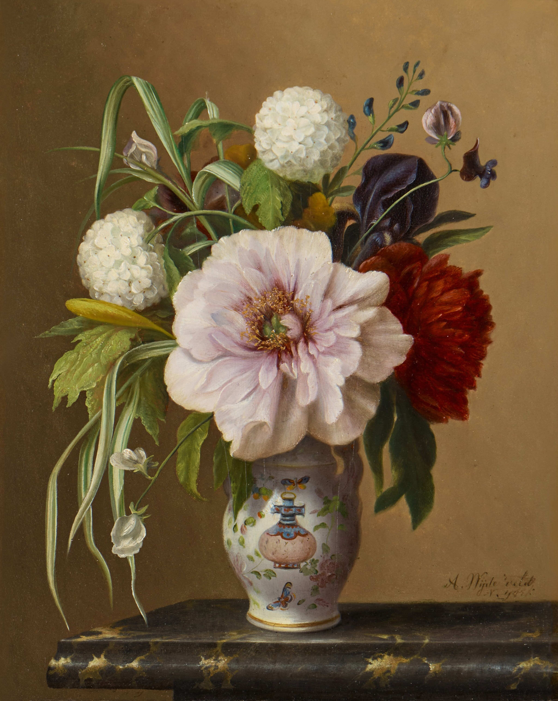
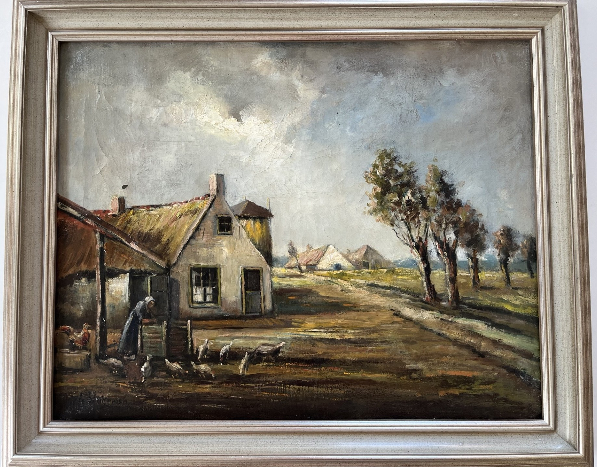
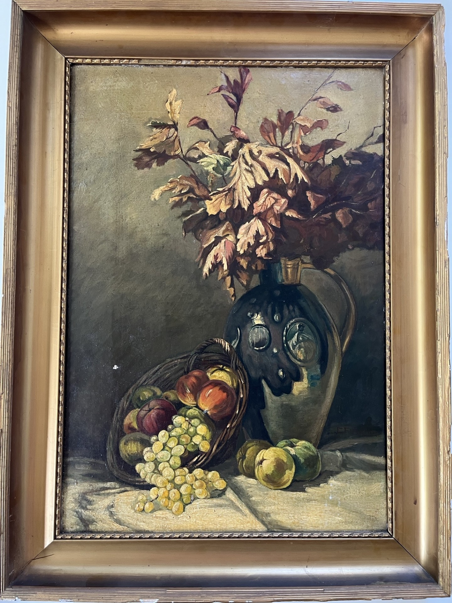
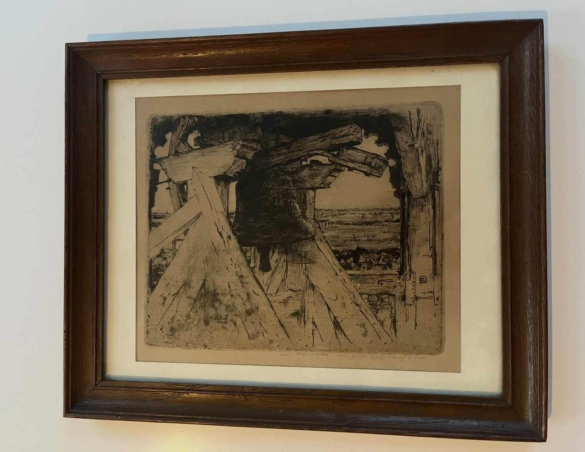
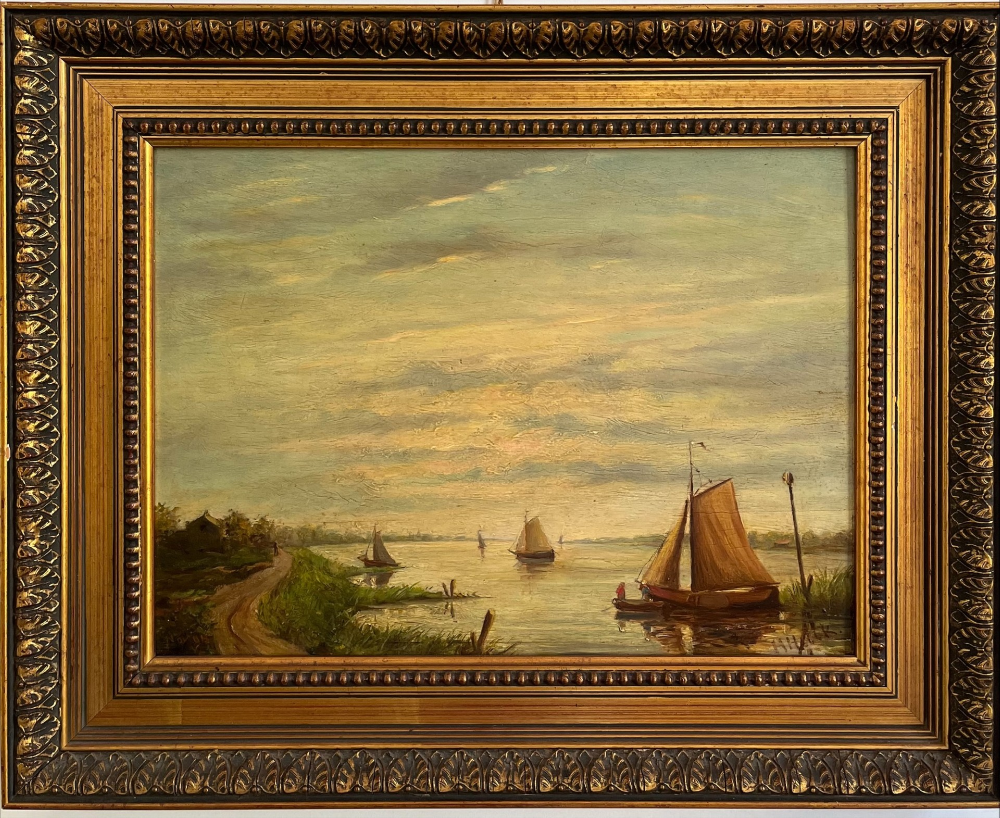
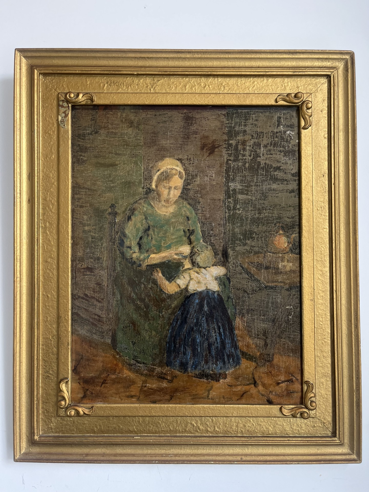
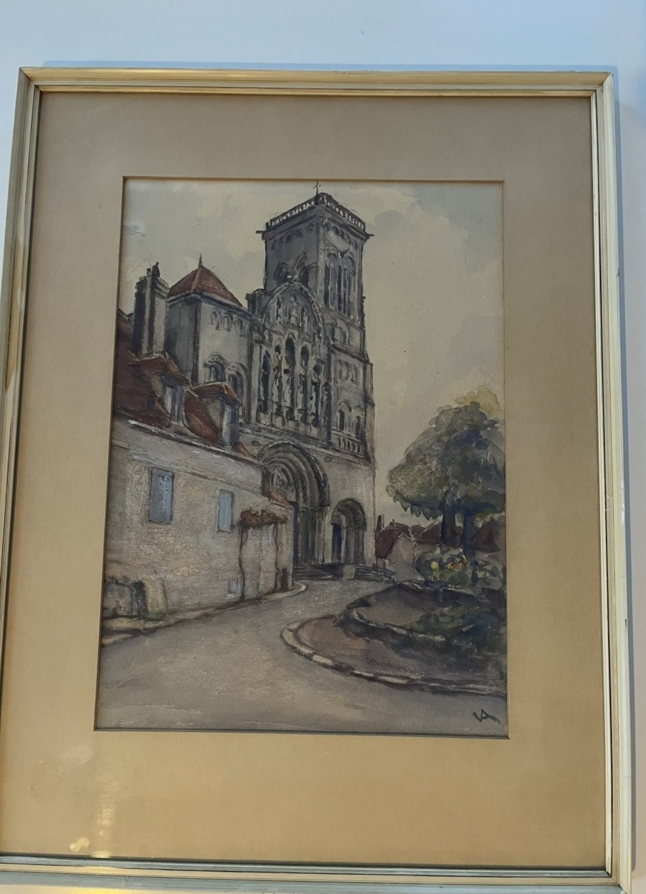
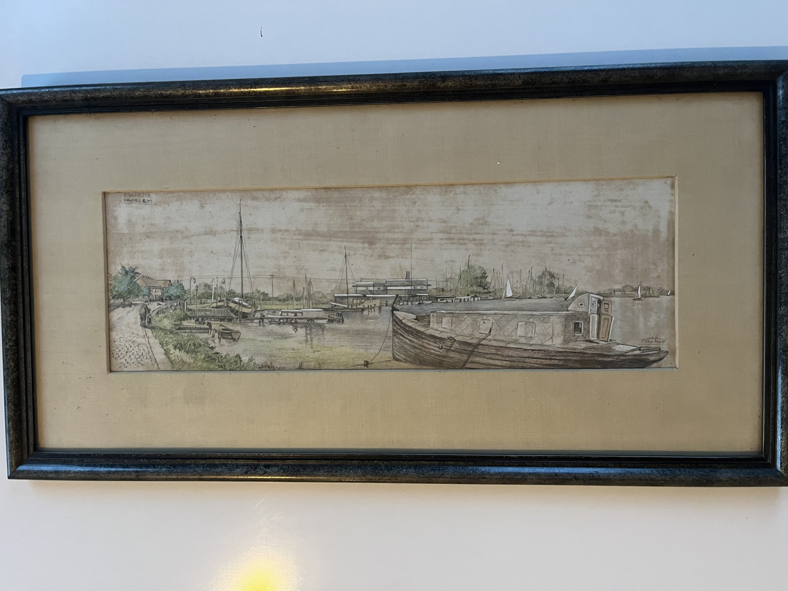

Welkom
Welkom op de website van MK kunst & antiek. Een plek waar historie, vakmanschap en esthetiek samenkomen. Wij richten ons op de conservatie en verkoop van authentieke kunstwerken en historische objecten met een eigen karakter.

A. Wijdeveld (1823-1888). Olieverf op paneel. Bron: Sotheby's.
Onze volledige verzameling is via deze website te bewonderen. Voor objecten die momenteel beschikbaar zijn voor overname, verwijzen wij u graag naar ons Marktplaats-kanaal.
De Verzameling
Een selectie van klassieke werken en historische stukken. Elk object in deze verzameling vertegenwoordigt een eigen tijdperk en uniek vakmanschap.

Hageman. Boerderij met pluimvee (ca. 1900).

EFCARIM. Stilleven met druiven (ca. 1880).

Walter Vaes (1904). De Klok van Veurne.

H. Hulk ('94). Riviergezicht.

M. Schwarz. Larens Interieur (ca. 1910).

VA. Basiliek Sainte-Marie-Madeleine, Vézelay (Ca. 1940).

J.M. Koopman (1914-1987). Spaarne Haarlem.
Historie & Visie
MK kunst & antiek is ontstaan vanuit een fascinatie voor de verhalen achter historische objecten. Het vormt een brug tussen het verleden en het heden.
De overtuiging is dat antiek een interieur verrijkt met een gevoel van continuïteit en ziel.